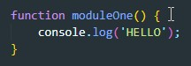
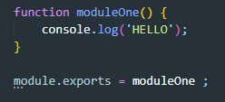
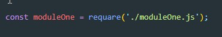

Такой способ помогает создавать у каждого модуля свою область видимости, т.е. другие модули не будут видеть локальные переменные файла JS тем самым мы избегаем вероятность конфликта имен переменных.
Теперь за пределами car мы можем обращаться к нему. Car - это не функция, теперь это объект у которого есть метод run
Допустим у нас есть файл moduleOn.js который содержит вот такой код:
Что бы экспортировать этот код мы добавляем в файл вот такую строку
Теперь в главной файле JS прописываем вот такую строку:
Название переменной произвольно, requare - принимает в себя путь до нашего модуля. писать .js не обязательно
Теперь нужно собрать эти два файла (index.js и moduleOne.js) в один bundle. Для этого обычно используют WebPack. Но могут попросить и другие варианты, рассмотрим один из них - BROWSERIFY
Утсановка
npm install -g browserifyДля сборки bandle вводим команду
browserify index.js -o bundle.js